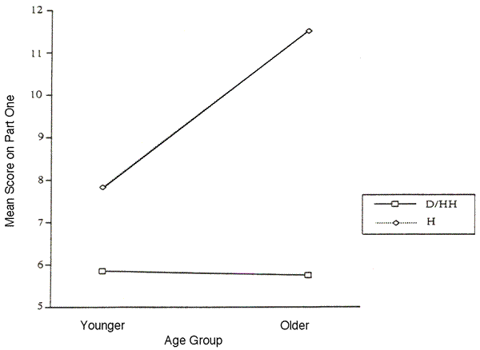
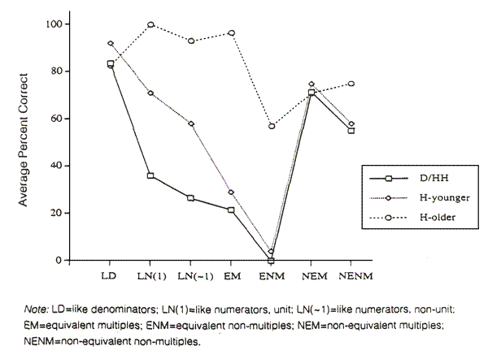

|
||||||||||||||||||||||||||||||||||||||||||||||||||||||||||||||||||||||||
|
The
Concept of Fractional Number Janet C. Titus Titus
is a doctoral candidate in the department of
Little is known about the mathematical knowledge and conceptual development of deaf and hard-of-hearing students. Since the early 1970s, educators have openly discussed the dearth of information in the, area and have called for a shift in attention from research in language development to research in mathematics education, one of a number of neglected areas in the education of many deaf children (Johnson, 1977; Lang, 1989; Sinatra, 1979; Suppes, 1974). The comparative lack of attention in the research literature parallels the lack of meaningful attention mathematics has received in the classrooms of many deaf children. Although historically deaf students have scored highest in mathematics in national assessments of reading and math (DiFrancesca, 1972; Gentile & DiFrancesca, 1969; Karchmer & Allen, 1984; Trybus & Karchmer, 1977), by graduation they lag far behind their hearing peers. Further, deaf students' relatively strong performance in mathematics is in mathematics computation, no longer an appropriate standard by which to judge mathematical literacy (Daniele, 1993; National Council of Teachers of Mathematics, 1989). Today's standards for mathematical literacy include conceptual understanding of mathematics, problem solving, communicating mathematics, and reasoning at all levels of the curriculum (National Council of Teachers of Mathematics, 1989). No research to date has been reported on the development of rational number concepts among deaf children. However, there is clearly a need for students to be meaningfully educated in rational number topics. Educators from the Model Secondary School for the Deaf (MSSD) and the National Technical Institute for the Deaf (NTID) have noted specific deficiencies in post-secondary deaf and hard-of-hearing students' knowledge of rational number topics such as fractions, decimals, percents, number lines, ratio, and proportion (Bone et al., 1984). According to Bone, et al. (1984), those skills most frequently characterized by instructors of technical courses as essential are ratio and proportion. During the past twelve years there has been much research in rational number concepts with hearing children. The importance of rational number concepts ties in their foundational role in the development of proportional reasoning, the "capstone of elementary math" and the "cornerstone of high school math" (Post, Behr, & Lesh, 1983). In particular, the realization that rational numbers have size, just as counting numbers have size, appears to be fundamental to children's development of rational number concepts, relations, and operations (Behr, Lesh, Post, & Silver, 1983; Behr, Wachsmuth, Post, & Lesh, 1984). One technique developed to investigate children's quantitative notion" of rational numbers is the "order and equivalence" task, in which children are asked to indicate which of the order relations greater than, less than, or equal to-is true for particular fraction pairs (Behr, Wachsmuth, & Post, 1985; Behr, Wachsmuth, Post, & Lesh, 1984; Post, Wachsmuth, Lesh, & Behr, 1985). Students are then asked to explain the strategy they used to order the fractions. By focusing on student strategies, much has been learned about the conceptual development of their thinking about rational numbers. The purpose of this study was to investigate deaf and hard-of-hearing students' understanding of the mathematical concept of fractional number as measured by their ability to determine the order and equivalence of fractional numbers. This study specifically investigates the level of performance of deaf and hard-of-hearing students on fractional number problems requiring the determination of order and equivalence and how this performance compares with that of their hearing peers; and strategies used by deaf and hard-of-hearing students to determine order and equivalence of fractional numbers and how these strategies compare with those of their hearing peers. |
||||||||||||||||||||||||||||||||||||||||||||||||||||||||||||||||||||||||
|
Method Subjects A total of 47 students, 23 boys and 24 girls, participated in the study. Twenty-one of the students were deaf or hard-of-hearing while 26 had normal hearing. All students were between 10 and 16 years of age, were enrolled in or had just completed a grade in the 3 through 10 range at the time of data collection, and had worked with fractions in their math class. The sample of 21 deaf and hard-of-hearing students was recruited from a summer science program at a state residential school for the deaf. Their characteristics included: an educationally significant hearing impairment (unaided hearing toss greater than 60 decibels across the speech frequencies of 500, 1000, and 2000 Hz); onset of deafness occurring prior to two years of age; and current recipients of special education services. These students were from a variety of educational placements: six were educated at a public residential school, five were educated in self-contained classrooms, and the remaining ten were mainstreamed and receiving itinerant support services. The median age of the thirteen deaf and hard-of-hearing students in the 10-12 year age group was twelve years two months, while the median age of the eight students in the 13-16 year age group was fourteen years ten months. The hearing sample consisted of 26 students who were recruited from two public, regular education classrooms located in a large urban area; 12 were enrolled in a fourth grade class and 14 were members of an eighth grade prealgebra class. The median age of the fourth grade students was ten years Four months, and the median age of the eighth grade students was fourteen years three months. All hearing students who participated were considered "average" mach students by their teachers' judgements. |
||||||||||||||||||||||||||||||||||||||||||||||||||||||||||||||||||||||||
|
||||||||||||||||||||||||||||||||||||||||||||||||||||||||||||||||||||||||
|
Materials The dependent measure is a two-part fractional number instrument with a total of 18 fraction pairs. Part one of the instrument consists of 14 items which require students to indicate which of two fractions presented in a pair is the "bigger" value. Each item also has an option for students to indicate if the fractions are equal in value. The 14 items represent seven distinct types of fractions, with two items for each fraction type. Table 1 above lists the definition of each type of fraction, along with the actual fraction pairs used on Part One. These specific categories of fractions have been employed in past research on the order and equivalence of fractions (Behr, Wachsmuth, Post, & Lesh, 1984; Roberts, 1985). Part Two of the instrument contains four additional fraction items similar to those on Part One. However, after choosing the larger-valued fraction or indicating that the fractions are equal in value, students are instructed to answer the question "How do you know?" That is, students are instructed to explain the strategy they used for ordering the fractions. This task was included in an effort to understand the strategies the students use when deciding which fraction has the larger value or whether the fractions are equal in value. Students are instructed to explain their strategies by drawing a picture, writing a sentence(s), or solving a math problem. For example, given the fraction pair "1/3 vs. 1/2", suppose a student correctly chooses 1/2 as the larger value. She could answer the question "How do you know?" by drawing a picture or writing a sentence ("I/2 is larger than 1/3 because halves are larger than thirds and you only have one of each"), or algebraically showing that 1/2 is a larger value than 1/3: "Let X=6. Then 1/2 times X = 3, and 1/3 times X = 2. Now let X = 4. Then 1/2 times X = 2, and 1/3 times X = 1 1/3.Now let X = 2. Then 1/2 times X = 1, and 1/3 times X = 2/3. So '1/2 is bigger than 1/3 because for the same value of X, 1/2 times X is always a bigger value than 1/3 times X." The four items included on Part Two of the instrument are: 1/5 vs. 1/12 (like numerators, unit); 8/13 vs.11/13 (like denominators); 8/9 vs. 24/27 (equivalent multiples); and I0/11, vs., 15/16 (non-equivalent non-multiples). The items were chosen to represent the full range of difficulty of fraction items. The items on both parts of the instrument are arranged in an easy-to-hard order. Design and Procedure Data were collected from the deaf and hard-of-hearing students on two separate occasions, with the younger students participating one week prior to the older students. The same procedures were used during each data collection. An interpreter skilled in American Sign Language assisted with the explanation of the directions and the administration of the instrument. All students practiced a number of example items similar to those on the dependent measure to insure they understood the directions. Those students needing additional help with the directions were given individual attention. The students proceeded as a group while completing the instrument. The explanation of the experimental tasks to the hearing students was identical to those given to the deaf and hard-of-hearing students with the obvious exception that an interpreter was not needed. The participating fourth grade students completed the cask in a quiet room in the basement of their school, while the eighth grade students completed the task in a reserved section of the school library. For the overall analysis, students were grouped by hearing status (deaf or hard-of-hearing, hearing) and age group (younger, older). The age groups included are meaningful from a fractional number perspective: elementary school students between the ages of 10 and 12 are typically beginning to work substantially with fractions, and junior and senior high school students between the ages of 13 and 16 are typically making the transition to algebra (for which fractional number concepts and proportional reasoning are important foundations). |
||||||||||||||||||||||||||||||||||||||||||||||||||||||||||||||||||||||||
|
||||||||||||||||||||||||||||||||||||||||||||||||||||||||||||||||||||||||
|
Results Overall Performance Tables 2 and 2a above display the descriptive statistics and the two-way analysis of variance table for Part One of the fractional number instrument. Figure 1 displays the cross-sectional results graphically. Main effects were found for hearing status and age group: the hearing students outperformed the deaf and hard-of-hearing students, and the older students outperformed the younger students. Further, a significant interaction was found, suggesting that performance on the fraction measure was not similar within the deaf and hard-of-hearing and hearing groups at the two age levels. Follow-up pairwise comparisons using Scheffe's method (p < .05) revealed the older hearing students significantly outperformed all other groups of students. No differences were found between the two age groups of deaf and hard-of-hearing students. Further, no differences were found between the younger hearing students and both age groups of deaf and hard-of-hearing students. Thus, performance between age groups revealed no difference in order and equivalence skills for the deaf and hard-of-hearing students, while a significant age difference was observed for the similarly aged groups of hearing students. Further, both age groups of deaf and hard-of-hearing students performed similarly to the younger hearing students. Because there was no overall difference in performance between the two age groups of deaf and hard-of-hearing students, subsequent analyses were performed using their combined data. |
||||||||||||||||||||||||||||||||||||||||||||||||||||||||||||||||||||||||
|
Figure 1
|
||||||||||||||||||||||||||||||||||||||||||||||||||||||||||||||||||||||||
 |
||||||||||||||||||||||||||||||||||||||||||||||||||||||||||||||||||||||||
|
Performance By Fraction Type Students' patterns of correct response choices for each item on Part One were examined by the seven fraction types. Most of the deaf and hard-of-hearing students as well as the younger hearing students were able to correctly order fractions with like denominators. Beyond this level, though, they appear to have had difficulty with the task. The pattern of correct responses for these two groups is strikingly similar as displayed in Figure 2. |
||||||||||||||||||||||||||||||||||||||||||||||||||||||||||||||||||||||||
|
Figure 2
|
||||||||||||||||||||||||||||||||||||||||||||||||||||||||||||||||||||||||
 |
||||||||||||||||||||||||||||||||||||||||||||||||||||||||||||||||||||||||
| The results of the
deaf and hard-of-hearing and younger hearing students on the most difficult
to order fractions (non-equivalent multiples and nonequivalent non-multiples)
initially seem equivocal. However, with these fractions, it is interesting
to note that the larger valued fractions are composed of the "bigger numbers".
For instance, 9/10 is indeed a larger fractional value than 3/5, but 9/10
is also composed of larger valued counting numbers (9 and 10) than is 3/5
(3 and 5). Behr, et al. (1984) found that hearing children in the early
stages of fraction concept development tend to order fractions based on
the whole number values of the individual numbers that compose the fractions
(termed whole number dominance"). It appears the deaf and hard-of-hearing
and younger hearing students may have been -likewise influenced. Results
of a post hoc analysis of all Part One fraction pairs from the perspective
of "whole number dominance" supported the hypothesis that the deaf and hard-of-hearing
and younger hearing students' were influenced by the size of the whole numbers
in each fraction pair when deciding which fraction had the larger value.
The older hearing students had little difficulty with ordering all fraction types. They more often recognized equivalence, and their performance on the most difficult to order fractions is not noteworthy since the majority of these students correctly ordered all other fraction types. The post hoc analysis revealed that the older hearing students were not greatly influenced by the size of the whole numbers when evaluating fractional size. Student-Reported Strategies for Determining Fractional Size On Part Two of the fractional number instrument, students were asked to order four fraction pairs and describe their strategy. The student-reported strategies from Part Two of the fractional number instrument served as the data for the analysis. The students' explanations were categorized into seven strategies based on the dominant or emphasized aspects of their reasoning (see Attachment 1). The overall pool of categorizable explanations was limited to 45% of the total pool, with 31% of the categorized strategies provided by deaf and hard-of-hearing students, 20% by the younger hearing students, and 49% by the older hearing students. The incomplete nature of the data should be kept in mind when considering the results. The most popular strategy reported by the deaf and hard-of-hearing students was the Counting Numbers strategy, which accounted for 81% of all strategies offered by the deaf and hard-of-hearing students. The younger group of hearing students also reported the Counting Numbers strategy most often, with 65% of their reported strategies failing within this category. In addition, the Counting Numbers strategy was used by the deaf and hard-of-hearing students and the younger hearing students as an "all purpose" strategy to order fractions of four different types. The older group of hearing students reported a wide range of strategies indicating a more mature understanding of fractional order and equivalence and only rarely regressed to the Counting Numbers strategy for the most difficult fraction pairs. Only 12% of their strategies fell within the Counting Numbers category. Discussion The main finding of this study is that the deaf and hard-of-hearing students between the ages of 10 and 16 years lagged behind their hearing peers in their development of the concept of fractional size. In terms of overall performance, an age-related increase in fractional ordering skills was observed for the hearing students. A similar effect was not observed for the deaf and hard-of-hearing students. Further, the deaf and hard-of-hearing students from both age groups performed similarly to the younger hearing students in their overall performance, the types of fractions they were capable of ordering, their pattern of correct responses when ordering fractions of different types, and the strategies they chose to order fractions. Like hearing children who are learning initial fraction concepts, the deaf and hard-of-hearing students were negatively influenced by the size of the counting numbers composing the fractions. Because these data are cross-sectional snapshots of the performance of distinct groups of students, rather than longitudinal data on the same groups of students as they grow older, it is not possible to draw definitive developmental conclusions. With this caveat in mind, the results of this study suggest that deaf and hard-of-hearing students may develop rational number concepts in a fashion similar to hearing children, but the development is somewhat delayed. This particular pattern-same sequence of development with delays been previously observed in research on the cognitive and conceptual development of deaf and hard-of-hearing children (see Greenberg & Kusche, 1989; Zwiebel & Mertens, 1985) as well as in more specific areas such as language, reading, writing (see Paul & Quigley, 1990), measurement, and money concepts (Austin, 1975). More research, particularly longitudinal research, is needed to more fully understand the development of rational number skills in deaf and hard-of-hearing children. What could explain a delay in rational number concepts among deaf and hard-of-hearing students? One possibility is related to the language of mathematics and, in particular, the language of fractions. Hearing children, who have no obstacles in the development of the English language, have a difficult time with the language used routinely to explain rational number concepts (Post, Behr, & Lesh, 1986; Roberts, 1985). Specifically, mismatches between the students' ideas of particular words used during fractions instruction (such as "more" and "less") and researchers' intended meanings of the words have created confusion among students. It is reasonable that any language problem experienced by hearing students would also be a problem for deaf and hard-of-hearing students. Another possible explanation for a delay is related to the quality of deaf and hard-of-hearing students' mathematics education. Given the highly publicized lack -of emphasis on mathematics for deaf and hard-of-hearing students and the inadequate university level training in mathematics for many teachers of the deaf, a delay could be the result of an insufficient mathematics education. This would more likely be the case for students in residential or self-contained placements, as students who are mainstreamed for mathematics are exposed to the same curriculum and classroom processes as their hearing peers and have math teachers who are subject matter specialists (Kluwin & Moores, 1985; Kluwin & Moores, 1989; Kluwin, 1992.) It is also possible that the findings could be influenced by limitations of the study. The request for students to explain their strategies in writing or pictures may have prevented fraction-wise deaf and hard-of-hearing or hearing students, who may have succeeded in an oral or manual interview, from clearly communicating their strategies. James (1981) believed hearing students need time to develop the appropriate oral language before explaining their thoughts on paper, while Williams (1975) observed that remedial hearing students experienced difficulty verbalizing fraction concepts they actually understood. With respect to deaf and hard-of hearing students, Scone (1991) theorized that students may have an intuitive understanding of math concepts and may lack the linguistic sophistication to explain their understanding. Although the results of this study are limited, they do suggest implications for the mathematics education of deaf and hard-of-hearing students. Implications If results such as those obtained in the present study can be partially explained by a lack of emphasis in mathematics for deaf students, then we as educators, parents, and researchers need to seriously consider the value of a good mathematics education for deaf and hard-of-hearing students. In 1989, the National Council of Teachers of Mathematics published their curriculum and assessment standards for K- 12 mathematics education. The Standards represent a radical shift in style and emphasis in what is expected to occur in mathematics classrooms as well as in students' heads. Although computation will always have a place in mathematics, the Standards indicate that skill in computation is no longer the yardstick by which the knowledge and understanding of math students-deaf and hearing alike-will be assessed. Rather, conceptual understanding, problem solving skills, reasoning ability, and mathematics communication are the new markers that define students' quantitative literacy. As we enter the twenty-first century, the stakes are higher, both in the mathematics classroom and in the technological world. If deaf and hard-of-hearing people are to equally compete in the technological job market, if the statistics for unemployment and underemployment among deaf and hard-of-hearing people are to improve, if the United States is to improve on the current deficit of scientists needed by industry and education, then mathematics needs a more valued place in deaf education. Without serious consideration given to the quality of mathematics education for deaf and hard-of-hearing students, they will be at risk for becoming semi-literate members of an increasingly more technological society (Danieie, 1993). As Daniele (1993) asserts, "This is in part a question of advocacy as well as education" (p. 79). The issue of the value of a good math education for deaf students also speaks to the university level training needed for teachers of the deaf. The focus of training for teachers of the deaf is on the development of communication skills. Thus, many teachers are inadequately trained to teach subject areas such as mathematics (Paul & Quigley, 1990). Students benefit greatly when their math teacher has been educated to teach them math. Kluwin and Moores (1985) found that mainstreamed hearing-impaired adolescents; achieved significantly better in mathematics than hearing-impaired students in self-contained classrooms, even after factors such as extent of hearing loss and prior achievement had been controlled. The differences were accounted for by the fact that regular education math teachers are subject area specialists and have more mathematics teaching experience. If delayed development in fractional number concepts among deaf and hard-of-hearing students can be partly explained by English language difficulties, then capitalizing on additional "modes of representation" of fractions concepts would be highly beneficial. Research from the Rational Number Project has shown that manipulatives (physical aides or "embodiments") play an important role in the development of the order and equivalence of fractional numbers as well as of other rational number concepts (Behr & Post, 1988; Post, Wachsmuth, Lesh, & Behr, 1985). However, physical representations of concepts are only one component in the development of representational systems. Verbal, pictorial, and symbolic modes of representation have also been shown to play a role in the acquisition and use of rational number concepts, and children's abilities to translate between different modes of representation facilitates their conceptual development (Lesh, Landau, & Hamilton, 1980). Sign language itself is an additional "mode of representation" available to many deaf children. Stone (1991) believes the intersection of sign language, the English language, the language of mathematics, and mathematical diagrams creates a potential for meaning that exceeds the potential associated with each "mode of representation" individually. Thus, using multiple modes of representation of math concepts and encouraging children's ability to translate between them would be powerful aids. Teaching the vocabulary of fractions within the context of rational number concepts may also facilitate students' learning. It is important, however, that "fraction words" not become the focus of the lesson. Although it is important to teach deaf and hard-of-hearing students the vocabulary of mathematics, vocabulary per se should not become the focus of math class (see Kidd, Madsen, Lamb, 1993). Fraction words gain meaning as they are used in context. Even more important than the issue of English language skills and their relationship to fractions conceptual development is the overarching issue of communicating mathematics. One of the core Standards for math education is for students to communicate mathematically. Asking students to explain their answers in writing, in sign, orally, in symbols, in any communication or representational system-is a powerful teaching strategy that encourages students to not only communicate mathematically, but also to reflect upon their thinking, to go beyond their present level of understanding and make connections they might not have made on their own (Martin, 1992). Metacognitive questions, such as "How did you know that 1/2 is bigger than 1/ 3? Show me.", or "Suppose your best friend didn't understand the problem. How would you explain it to him?", were used successfully throughout the Rational Number Project. Questions such as these encourage students to communicate about math concepts, which in turn aids their conceptual development and the development of thinking skills (Martin, 1992). Dietz (1991) presents a number of examples for encouraging deaf students to communicate mathematically. A plethora of research has been performed with hearing children on the development of rational number concepts, as well as in all areas of mathematics education. Much of what has been learned about teaching fractions to hearing children could also be applied to teaching deaf and hard-of-hearing children. The importance of initial fraction concepts, teaching for meaning and the use of embodiments could be adapted to meet the learning characteristics of deaf and hard-of-hearing children. To the extent that these children are similar to hearing children in terms of their pattern of development of rational number concepts, research on the developmental sequence of hearing children should be kept in mind and applied where possible.
References Austin, G. F. (1975). Knowledge of selected concepts obtained by an adolescent deaf population. American Annals of the Deaf, 120. 360-370. Behr, M. J., & Post, T. R. (1988),- Teaching rational number and decimal concepts. In T. R. Post (Ed.), Teaching mathematics in grades K-8: Research based methods (pp. 190-231). Boston: Allyn & Bacon, Inc. Behr, M. J., Lesh, R., Post, T.R., & Silver, E. A. (1983). Rational number concepts. In R. Lesh & M. Landau (Eds.), Acquisition of mathematics concepts and processes (pp. 92-126). New York: Academic Press. Behr, M. J., Wachsmuth, I., & Post, T. R. (1985). Tasks to assess children's perception of the size of a fraction. In A. Bell, B. Low, and J. K. Kilpatrick (Eds.), Theory, Research, and Practice in Mathematical Education; Working Group Reports and Collected Papers, Fifth International Congress on Mathematical Education, (pp. 179-185). University of Nottingham, United Kingdom: Shell Centre for Mathematical Education. Behr, M. J., Wachsmuth, I., Post, T. R. & Lesh. R. (1984). Order and equivalence of rational numbers: A clinical teaching experiment. Journal for Research in Mathematics Education, 115), 323-341. Bone, A. A., Carr, J. A., Daniele, V. A., Fisher, R., Fones, N. B., Innes, J. I., Maher, H.P., Osborn, H. G., & Rockwell, D. L. (1984). Promoting a clear path to technical education. Washington, D. C.; Model Secondary School for the Deaf Daniele, V. (1993). Quantitative literacy. American Annals of the Deaf, 138(2), 76-81. Dietz, C. (1991). Communicating mathematics: Meeting new challenges. Perspectives in Education and Deafness, 9(3), 22-23. DiFrancesca, D. (1972). Academic achievement test results of a national testing program for beating-impaired students (Series D, No. 9). Washington, D. C.: Gallaudet University, Center for Assessment and Demographic Studies. Gentile, A., & DiFrancesca, S. (1969). Academic achievement test performance of bearing-impaired students. United States, Spring, 1969. (Series D, No. 1). Washington, D. C.: Gallaudet University, Center for Assessment and Demographic Studies. Greenberg, M. T., & Kusche, C. A. (1989). Cognitive, personal, and social development of deaf children and adolescents. In M. Wang, M. Reynolds, & H. Walberg (Eds.), The handbook of special education: Vol. 3. Research and practice (pp. 95-129). Oxford, England: Pergamon. James, N. (1981). Toward thinking mathematically: Part I-What is a fraction? In R. Karpius (Ed.), Proceedings of the Fourth International Conference, the Psychology of Mathematics Education, (pp. 39-45). Berkeley: University of California. Johnson, K. A. (1977). A survey of mathematics programs, materials, and methods in schools for the deaf. American Annals of the Deaf, 12.2(l), 19-25. Karchmer, M. A. & Allen, T. E. (1984). Adaptation and standardization: Stanford Achievement Test (Seventh Edition) for use with bearing impaired students. Washington, D. C.: Gallaudet Research Institute, Center for Assessment and Demographic Studies. (ERIC Document Reproduction Service No. ED 257 237). Kidd, D. H., Madsen, A. L, & Lamb, C. E. (1993). Mathematics vocabulary: Performance of-residential deaf students. School Science and Mathematics, 93(8), 418-421. Kluwin, T. N. (1992). Considering the efficacy of mainstreaming from the classroom perspective. In T. N. Kluwin, D. F. Moores, & M. G. Gaustad (Eds.), Toward effective public school programs for deaf students: Context process, and outcomes (pp. 175-193). New York: Teachers' College Press. Kluwin, T. N., & Moores, D. F. (1985). The effects of integration on the mathematics achievement of hearing-impaired adolescents. Exceptional Children; 52, 153-160. Kluwin, T. N., & Moores, D. F. (1989). Mathematics achievement of hearing-impaired adolescents in different placements. Exceptional Children; 53(4), 327-335. Lang, H. (1989). Academic development and preparation for work. In M. Wang, M. Reynolds, & H. Walberg (Eds.), The handbook of special education: Vol. 3. Research and practice (pp. 71-93). Oxford, England: Pergamon. Lesh, R., Landau, M., & Hamilton, E. (1980). Rational number ideas and the role of representational systems. In R. Karplus (Ed.), Proceedings of the Fourth International Conference for the Psychology of Mathematics Education. Berkeley, CA: University of California. Martin, D. S. (1992). Maximizing intellectual potential in today's learner. Can we really improve student thinking? Focus on Learning Problem in Mathematics, 140), 3-13. National Council of Teachers of Mathematics (1989). Curriculum and evaluation standards for school mathematics. Reston, VA: NCTM. Paul, P. V., & Quigley, S. P. (1990). Education and deafness. New York: Longman. Post, T. R., Behr, A J., & Lesh, R. (1983) The role of rational number concepts in the development of proportional reasoning skills. Unpublished manuscript. Post, T. R., Behr, M. J., & Lesh, R. (1986). Research-based observations about children's learning of rational number concepts. Focus on Learning Problems in Mathematics, 8(l), 39-48. Post, T. R., Wachsmuth, I., Lesh. R., & Behr, M. J. (1985). Order and equivalence of rational numbers: A cognitive analysis. Journal for Research in Mathematics Education, 16(1), 18-36. Roberts, M. P. (1985). A clinical analysis of fourth- and fifth-grade students' understandings about the order and equivalence of fractional numbers. Unpublished master's thesis, University of Minnesota, Minneapolis. Sinatra, 1. (1979, February). The effect of instructional sequences involving iconic embodiments on the attainment of concepts embodied symbolically. Paper presented at a research meeting on the psychology of deafness, Gallaudet College, Washington, D.C. Scone, J. B. (1991). Exploring representational intersections in mathematics instruction: Reflections on the learning of deaf students. In R. R. Cocking & J. P. Mestre (Eds.), Linguistic and cultural influences on learning mathematics (pp. 63-71). Hillsdale, NJ: Lawrence Erlbaum Associates. Suppes, P. (1974). A survey of cognition in handicapped children. Review of Educational Research, 44(2), 145-176. Trybus, R. J., & Karchmer, M. A. (1977). School achievement scores of he2nng impaired children: National dam on achievement status and growth patterns. American Annals of the Deaf, 122(3), 62-69. Williams, H. B. (1975). A sequential introduction of initial fraction concepts in grades two and four and remediation in grade six (Ed. S. Research Report). Ann Arbor: University of Michigan, School of Education. Zwiebel, A., & Mertens, D. (1985). A comparison of intellectual structure in deaf and hearing children. American Annals of the Deaf, 130(l), 27-31. Attachment
1
Definitions and Examples of Ordering Strategies 1. Size of Piece: Students' reasoning focused on either the size of the piece represented by the fractional value (a 1/5th piece), or on the size of an individual partition of the unit. [Example: 1/5* vs. 1/12. The student drew two correctly partitioned circles and shaded the appropriate areas. Next to the circle indicating 1/5, he wrote "That piece is bigger", and chose the correct response.] 2. Number of Pieces: Students' reasoning focused on the number of equal-sized parts into which the unit wholes were divided (represented by the denominator), or on the number of those parts being considered in the fraction (represented by the numerator). [Example: 8/13 vs. 11/13*. The student drew two wholes, each with 13 pieces. She shaded 8 sections in the first whole, and 11 sections in the second whole. Over the representation of 8/13 she wrote "few taken", and over the representation Of 11/13 she wrote "more taken". She indicated 11/13 as the larger.] 3. General Area: In some instances, students correctly drew an area representation of the fractions, complete With shaded parts, but gave no further instructive explanation for their choice. Thus, it was not clear whether they employed a "Size of Piece" or "Number of Pieces" strategy, or any other one for that matter. As the "Size of Piece" and "Number of Pieces" strategies are both based on area representations, the present strategy was labeled "General Area" to emphasis the fact that students may have employed one of the area strategies defined above. [Example: 8/13 vs. 11/13*. Student drew 13 squares and shaded 8 of them. She drew another set of 13 squares and shaded 11 of them. She correctly ordered the fractions.] 4. Counting Numbers: Students' reasoning focused on the value of the numerator and/or denominator, and ordering of the fractions was based on the value(s) of the counting numbers composing each fraction. Note that this strategy is valid only when ordering fractions with like denominators. [Example: 8/9 vs. 24/27. The student wrote "I know that 24/27 is bigger because it has bigger numbers."] 5. Residual: Students compared each fraction to a value (or area) which was greater than both the fractions being compared. Further, the focus was on the difference between the fractions and the value 1 (or the unit whole). [Example: 8/13 vs. 11/13*. Student drew two circles, each partitioned into 13 sections. She shaded 8 sections in one circle, and 11 in the other. She chose the correct answer, writing, "There are less pieces left over".] 6. Multiplicative: Students focused on the relationships between the numerator and denominator in a pair of fractions, and ordering was based on the multiplicative relationships among individual terms in the fraction pair. [Example: 8/9 vs, 24/27. Student wrote "You can reduce 24/27 to 8/9, and indicated the fractions are equal in value.] 7. Number Patterns: This strategy included the identification of numerical relationships among the numerators and denominators in the pair of fractions to be ordered. Specifically, it was by way of an arbitrary "rule". [Example. 8/13 vs, 11/13*. Student drew two sets of thirteen lines. He circled eight of them in one set, and eleven in the other set. He then wrote "Remember lowest one wins", and chose 8/13 as the larger.] Note. An asterisk (*) indicates the larger fraction; no asterisk indicates equivalent fractions. |
||||||||||||||||||||||||||||||||||||||||||||||||||||||||||||||||||||||||